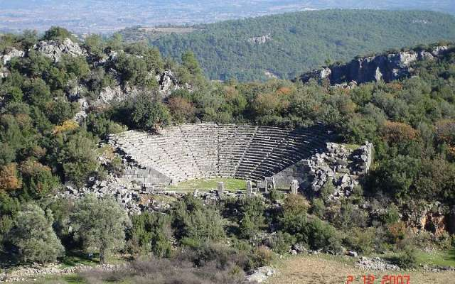
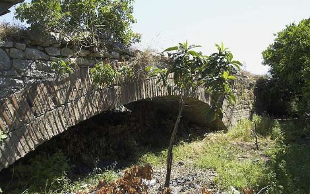

Tumbas excavadas en la roca, ciudades de la Liga Licia y calas turquesas. La ruta parte de Fethiye y sigue la costa hacia el este hasta Antalya; se disfruta mejor en tres días.
Día 1

La tumba rupestre de Amintas, tallada en los acantilados sobre el centro de Fethiye, es una de las tumbas rupestres más impresionantes de Licia.

Kayaköy, cerca de Fethiye, es un pueblo abandonado de cientos de casas de piedra esparcidas por las laderas.

Tlos, cerca de Fethiye, se asienta sobre un alto peñasco que domina el valle del Janto y se considera una de las ciudades licias más antiguas y grandes, con raíces…

Pinara, cerca de Fethiye, es una ciudad licia al pie de una enorme pared rocosa salpicada de cientos de aberturas de tumbas.
Día 2

El Letoon, cerca de Janto, fue el santuario más importante de la Liga Licia.

Janto fue la ciudad más importante de Licia y durante mucho tiempo su centro administrativo.

Patara fue uno de los puertos más importantes de Licia y se encuentra justo detrás de su famosa playa de dunas, de varios kilómetros.

El Museo de las Civilizaciones Licias ocupa el granero restaurado construido bajo el emperador Adriano en Andriake, el antiguo puerto de Myra, testimonio del papel de…
Día 3

Myra es una de las ciudades más impactantes de Licia, famosa por las tumbas talladas en los acantilados al borde de la llanura de Demre.

El Museo Monumento de San Nicolás, en Demre, es la iglesia dedicada a San Nicolás, inspiración de la figura de Papá Noel.

Limyra, cerca de Finike, es una encantadora ciudad licia donde el agua de manantial del Tauro corre entre las ruinas.

Olympos es una romántica ciudad antigua entre pinos y laureles, a ambos lados de un arroyo donde los montes Bey se encuentran con el mar.

Faselis, cerca de Kemer, se asienta en una pequeña península donde los pinares se encuentran con el mar, y es famosa por sus tres puertos.
Rutas preparadas día a día para ayudarle a planificar. Los tiempos son aproximados; consulte horarios y estado de las carreteras antes de salir.